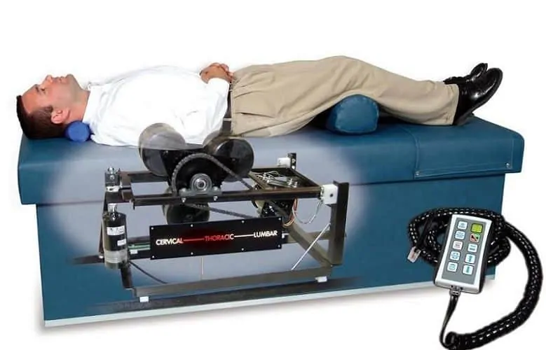

Spinal Adjustments
Spinal adjustments are a cornerstone of chiropractic care,
focusing on realigning vertebrae to alleviate pain and improve
function. By applying controlled force to specific joints,
chiropractors can address joint restrictions and improve
movement. This technique is commonly used for back pain, neck
pain, headaches, and other musculoskeletal issues.
Soft Tissue Therapy
Soft tissue therapy encompasses techniques including massage,
myofascial release, and trigger point therapy. These approaches
target tension and dysfunction in muscles, tendons, and
ligaments, helping improve mobility and reduce discomfort.
Soft tissue therapy may be used for sports injuries,
repetitive strain, and muscle tension.
Traction Therapy

Traction therapy uses mechanical traction devices to gently
stretch and decompress the spine. It may be used as part of a
treatment plan for conditions involving disc and nerve
irritation, including sciatica and spinal stenosis.
Massage Therapy
Massage therapy involves manipulating soft tissues to alleviate
tension, reduce discomfort, and promote relaxation. Techniques
may include Swedish massage, deep tissue massage, and myofascial
release. Massage can complement other approaches to
musculoskeletal care.
Graston
Graston Technique® is a form of instrument-assisted soft tissue
mobilization (IASTM). It uses specially designed stainless-steel
instruments as part of manual therapy to address areas of
restricted soft-tissue mobility.